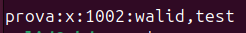
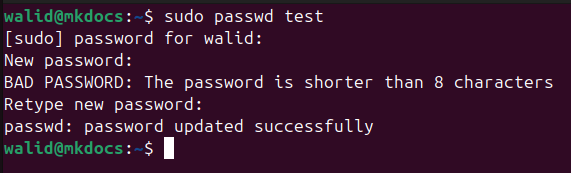
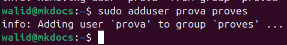
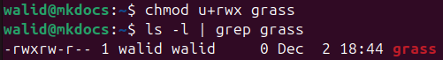
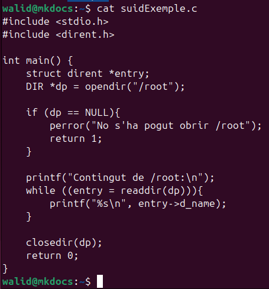
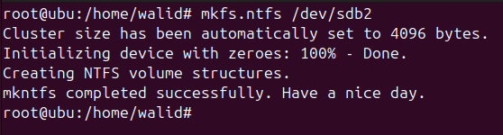
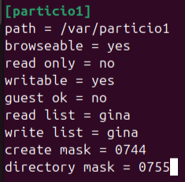
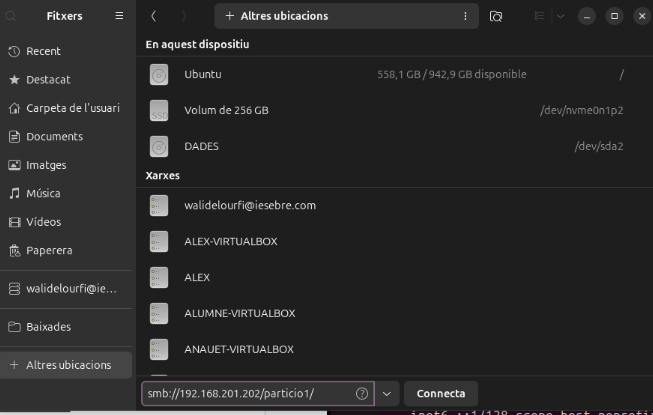

Sprint 2
Gestió de Procesos
Identificació de procesos
Per identificar procesos en temps real podem utilitzar la següent comanda:
(sudo) top
També es pot servir aquest altre:
(sudo) htop
També podem veure els procesos i els fills en forma de arbre, aquesta vegada no es en temps real amb la següent comanda:
(sudo) pstree
Utilitzant pstree, podem veure que alguns processos provenen d'altres, aquests processos es diuen procesos fills.
Filtratge
Per filtrar els procesos amb pstree podem utilitzar -p -h i ajuntar amb grep.
- p s'utilitza per visualitzar el PID (Process ID) de cada proces.
- h subralla el procés que estem buscant.
Matar processos
Per matar processos s'utilitza la següent comanda:
(sudo) kill [PID]
Aquesta comanda envia una petició per que el programa tanqui.
A vegades pot no funcionar i s'hauria de forçar amb la següent comanda:
(sudo) kill -9 [PID]
Treballs
Quan un proces es pausa utilitzant ctrl + z, es posa en segon pla i es diu treball.
Es pot canviar l'estat dels treballs amb les seguents comandes:
jobs //Llista els treballs

Al llistar, es mostra el numero del treball ([1]+), l'estat en que es troba (Aturat), i a quina comanda es refereix (top).
fg %[number] //Continua el proces indicat amb el numero de treball.
kill %[number] //Mata el proces indicat amb el numero de treball.
Gestió d'usuaris
Usuaris
Un usuari es una identitat que representa a una persona dintre del sistema el qual té permisos i rols.
Dintre del sistema poden haber mes de un usuari, al treballar en sistemes monolloc no es poden connectar de forma simultànea.
En cada sistema sempre hi haurà un usuari amb tots els permisos possibles, root.
Grups
Els grups són un conjunt de usuaris per a facilitar la gestió de forma col·lectiva.
Cada usuari es crea amb un grup amb el mateix nom que aquest i s'assigna com el principal.
Cada usuari té un grup principal, aquest es el grup per defecte que s'assigna com a grup amb permisos per elements creats per l'usuari.
El grup amb més permisos es el grup sudo, aquest grup pot invocar a root utilitzant la comanda sudo.
Gestió Gràfica
La majoria de configuracions que utilitzariem el dia a dia es pot fer en interficie grafica instalant el seguent paquet.
(sudo) apt install gnome-system-tools
Busquem l'aplicacio de gestio d'usuaris.
En aquest menu, podem gestionar els usuaris, en aquest cas, solament esta el usauri walid.
Per crear un usuari nou, cliquem add en el menu i escribim el nom de l'usuari.
Introduim una contrasenya.
Finalment, podem veure l'usuari creat.
Fitxers Implicats
Aquests, son els fitxers implicats en confirmar els nostres canvis, no es recomana en cap cas modificar els arxius.
Tots els fitxers estan dintre de la carpeta /etc.
passwd
Es guarda la informacio publica de cada usuari del sistema.
Cada linea indica un usuari, la informacio esta separada per un signe de doble puntuacio (:).
Cada apartat (que esta separat per :) representa el seguent.
usuari:contrasenya:UID:GID:gecos:directori_home:shell
- Usuari: indica el nom de l'usuari.
- Contrasenya: indica amb un * o X si la contrasenya esta guardada en format hash a l'arxiu shadow, si no hi ha res, indica que no hi ha contrasenya.
- UID: ID de l'usuari dintre del sistema.
- GID: ID del grup principal de l'usuari.
- Gecos: es mostra la informacio addicional de l'usuari (nom complet, numero telefon, etc).
- Directori_home: indica la ruta completa on s'allotja el directori principal de l'usuari.
- Shell: indica l'interpretador shell utilitzat per l'usauri.
group
Es guarda la informacio sobre els grups del sistema.
Cada apartat (que esta separat per :) representa el seguent.

grup:contrasenya:GID:usuaris
- Grup: indica el nom del grup.
- Contrasenya: indica si el grup te contrasenya contenent una X, si aquest no esta, significa que no hi ha contrasenya.
- Usuaris: mostra els usuaris dintre del grup.
shadow
Es guarda la informacio relacionada amb la seguretat de cada usuari.
Es mes segur que passwd al solament poder accedir amb privilegis de root.
Cada apartat (que esta separat per :) representa el seguent.
usuari:contrasenya:ultim_canvi:dies_minims:dies_maxims:dies_avis:dies_inactivitat:data_expiracio
- Usuari: indica el nom de l'usuari
- Contrasenya: mostra la contrasenya en format hash.
Si es mostra un ! significa que l'usuari esta bloquejat i no pot accedir.
Si es mostra un * significa que l'usuari esta desabilitat o no te contrasenya. - Ultim_canvi: mostra la data del ultim canvi de contrasenya realitzat.
- Dies_minims: dies minims que han de passar abans de poder canviar la contrasenya.
- Dies_maxims: dies maxims el qual una contrasenya es valida fins que s'ha de canviar.
- Dies_avis: dies abans de l'expiracio de la contrasenya el qual s'avisa a l'usuari.
- Dies_inactivitat: dies marge amb la contrasenya expirada abans de bloquejar l'usuari.
gshadow.
Es guarda la informacio relacionada amb la seguretat de cada grup.
Es mes segur que group al solament poder accedir amb privilegis de root.
Cada apartat (que esta separat per :) representa el seguent.
grup:contrasenya:administradors:usuaris
- Grup: indica el nom del grup
- Contrasenya: mostra la contrasenya en format hash.
Si es mostra un ! significa que el grup esta bloquejat i no pot accedir.
Si es mostra un * significa que el grup no te contrasenya. - Administradors: llista d'usuaris administradors del grup separat per comes.
- Usuaris: llista d'usuaris del grup separat per comes.
Afegir un usuari
Per afegir un usuari escrivim la següent comanda i introduim la contrasenya i l'informació addicional.
Aquesta comanda, et guia i crea els parametres per defecte per crear un usuari.
(sudo) adduser [usuari]
Al utilitzar la comanda id, podem veure que el usuari s'ha creat amb el seu user id juntament amb el seu propi grup principal i el seu group id.
Una altra forma, sense cap tipus de guia i parametres creats seria:
(sudo) useradd [usuari]
Configurar usuari desde 0
Per configurar un usuari desde 0, escribim la seguent comanda:
(sudo) useradd [usuari]
Establim la contrasenya amb la seguent comanda:
(sudo) passwd [usuari]

Establim el shell del usuari amb la seguent comanda:
(sudo) usermod -s [shell] [usuari]
Per a establir la carpeta home, primer la creem i posem com a propietari el usuari i el seu grup principal, seguidament escribim aquesta comanda:
(sudo) usermod -d [ruta absoluta de la carpeta home] [usuari]
Si estem en Ubuntu Desktop, la millor manera per comprovar si hem configurat de forma correcta al usuari es entrant amb l'interficie grafica.
Modificar contrasenya
Per modificar la contrasenya, podem utilitzar la següent comanda
(sudo) passwd [usuari]

Modificar nom
Per modificar el nom d'un usuari, escrivim la seguent comanda:
(sudo) usermod -l [nou nom d'usuari] [usuari]
Mirant l'arxiu /etc/passwd, podem comprovar que l'usuari ha canviat de nom, pero no els altres parametres.
Borrar usuari
Per esborrar un usuari, podem utilitzar la següent comanda.
Aquesta comanda solament borra el usuari, però no els directoris i altres parametres d'aquest.
(sudo) deluser [usuari]

Per borrar el directori i altres parametres del usuari, utilitzem la següent comanda.
(sudo) deluser -r [usuari]
Com l'usuari no tenia una carpeta de mail, no el pot borrar.
Bloquejar usuari
Per a bloquejar un usuari, escrivim la seguent comanda:
(sudo) usermod -L [usuari]
Podem veure que l'usuari esta bloquejat al no surtir en la llista d'usuaris per iniciar sessio.
Tampos ens deixara connectar-nos amb su.
Desbloquejar usuari
Per desbloquejar un usuari, escrivim la seguent comanda:
(sudo) usermod -U [usuari]
Al desbloquejar l'usuari, podem veure que ja podem connectar-nos per su.
I tambe per interficie grafica.
Politica de caducitat
Per a establir o modificar politiques de caducitat de cada usuari, utilitzarem la seguent comanda:
(sudo) chage [opcions] [usuari]
Interactiu
Podem configurar la politica de caducitat de forma interactiva amb la seguent comanda:
(sudo) chage [usuari]
- Minimum Password Age: dies minims que han de passar abans de canviar de contrasenya.
- Maxim Password Age: dies maxims que poden passar sense canviar la contrasenya.
- Last Password Change: Ultima vegada que es va canviar la contrasenya del usuari.
- Password Expiration Warning: dies abans de l'expiracio de la contrasenya el qual s'avisa a l'usuari.
- Password Inactive: dies que l'usuari encara pot entrar al compte amb la contrasenya caducada. -1 significa que no hi ha marge.
- Account Expiration Date: data de caducitat del compte.
Carpetes de configuracio d'usuari
skel
Aquesta carpeta esta ubicada en /etc/skel/, el contingut dintre de la carpeta sera copiat dintre de la carpeta home de cada usuari del sistema. Qualsevol canvi, s'aplicara a cada usuari nou creat despres del canvi.
.profile
Aquest arxiu es un script que s'ubica tant a /etc/skel/ com a totes les carpetes home dels usuaris. Serveix per a configurar les variables de l'entorn de l'usuari al iniciar sessio.
.bashrc
Aquest arxiu es un script que s'ubica tant a /etc/skel/ com a totes les carpetes home dels usuaris. Serveix per a configurar cada terminal oberta per l'usuari.
Com l'arxiu es bastant extes, la imatge sol mostra una petita configuracio de alias.
.bash_logout
Aquest arxiu es un script que s'ubica tant a /etc/skel/ com a totes les carpetes home dels usuaris. Aquest script s'executa quan un usuari tanca sessio.
login.defs
Aquest arxiu s'ubica en /etc/login.defs. Serveix per a configurar les configuracions i politiques per defecte dels usuaris.
adduser.conf
Aquest arxiu s'ubica en /etc/adduser.conf. Serveix per a configurar les configuracions al crear usuaris amb adduser i grups amb addgroup.
Crear grups
Per a crear un grup utilitzarem la seguent comanda:
(sudo) addgroup [grup]
Afegir usuaris a un grup
Hi han tres metodes per afegir un usuari a un grup:
GPASSWD
Podem utilitzar la comanda gpasswd:
(sudo) gpasswd -a [user] [group]
ADDUSER
Podem utilitzar la comanda adduser:
(sudo) adduser [user] [group]

USERMOD
Podem utilitzar la comanda usermod:
(sudo) usermod -a -G [group] [user]
Eliminar usuari d'un grup
Per a eliminar un usuari de un grup utilitzem la seguent comanda, s'ha de tenir delicadesa ja que si no posem el grup, l'usuari sera eliminat:
(sudo) deluser [user] [group]
Una altra forma es amb la comanda seguent:
(sudo) gpasswd -d [user] [group]
Canviar el nom d'un grup
Per canviar el nom del grup, utilitzem la seguent comanda:
(sudo) groupmod -n [nouNom] [grup]
Assignar administrador de un grup
Per posar un usuari com a administrador de un grup, utilitzem la seguent comanda:
(sudo) gpasswd -A [user] [group]
Modificar grup principal d'un usuari
Per posar un nou grup com a principal a un usuari, utilitzem la seguent comanda:
(sudo) usermod -g [group] [user]
Assignar contrasenya a un grup
Per assignar una contrasenya a un grup, escrivim la seguent comanda:
(sudo) gpasswd [group]
Esborrar contrasenya de un grup
Per esborrar la contrasenya de un grup, utilitzem la seguent comanda:
(sudo) gpasswd -r [group]
Gestió de permisos
Cada carpeta i fitxer en Linux tenen una serie de permisos. Aquests es separen amb permisos normals, umask, especials i ACLs.
Juntament amb els permisos, estant els propietaris del fitxer o carpeta en questio. Els propietaris son tant un usuari com un grup.
(comanda) -R
En totes les comandes seguents, es pot afegir el "-R" per fer-la recursiva, es a dir, que els permisos es pasen als fitxers i carpetes conte la propia carpeta.
Per a posar un usuari i un grup com a propietari, utilitzem la seguent comanda:
(sudo) chown [user]:[group] [fitxer/carpeta]
Si es vol canviar solament el grup propietari, utilitzem la seguent comanda:
(sudo) chgrp [group] [fitxer/carpeta]
Permisos base
Els permisos es tracten en tres grups separats. Usuari propietari, grup propietari i altres.
Per a cada un, es donen 3 permisos diferents:
- R: en ingles read, dona permisos de lectura.
- W: en ingles write, dona permisos d'escritura, en el cas de carpetes, modificacio.
- X: en ingles execute, dona permisos d'execucio.
Per a modificar els permisos, utilitzem la seguent comanda:
(sudo) chmod [permisos] [fitxer/carpeta]
Els permisos es poden donar de diferentes maneres:
També es pot en forma de simbols:
Primer s'escriu a quin tipus d'usuari aplica:
- u: usuri
- g: grup
- o: altres
S'escriu si afegim, subtreure o copiar els permisos que pasarem:
- +: afegir
- -: substreure
- =: copiar exactament com es mostra
Finalment, es posa el tipus de permis:
- r: llegir
- w: escriure
- x: executar
(sudo) chmod [permisos] [fitxer/carpeta]
Exemple en octal:
Exemple en simbols:

Umask
El umask (user mask) controla els permisos predefinits que s'asignaran a archius i carpetes noves.
S'aconsegueix restan el umask amb els permisos donats en base octal, per exemple:
umask -> 077
Permisos donats -> 777
Si restem el umask amb els permisos donats -> 777 - 077 = 700
Per tant els permisos que tindra finalment l'arxiu seran 700.
La comanda es la següent:
(sudo) umask [permisos per defecte]
Warning
L'efecte del umask dura tota la sessió de la terminal activa on s'ha realitzat la comanda.
Per fer permanent la comanda, s'hauria d'incloure al .bashrc
Permisos especials
Els permisos especials en Linux, son permisos addicionals que es poden afegir als fitxers i carpetes del sistema segons les necessitats d'aquestes.
Sticky
En un directori, permet que solament el propietari del arxiu, o root, pugui modificar-ho.
S'utilitza comunment en la comparticio de carpetes.
En el camp de permisos, es mostra amb una t al final.
drwxrwxrwT
Per a aplicar-ho en un directori, s'utilitza la seguent comanda:
(sudo) chmod +t [directori]
SUID
Permet a un usuari tindre els permisos del usuari propietari durant la execucio del fitxer.
En el camp de permisos, es mostra amb una s en menys de una x a l'usuari propietari.
-rwsr-xr-x
Per a aplicar-ho en un arxiu, s'utilitza la seguent comanda:
(sudo) chmod u+s [fitxer]
Exemple
L'arxiu executable, mostra el contingut de la carpeta /root, aquest contingut no es podra mostrar si no ets root.

Incloem al executable el permis especial suid i executem l'arxiu.
SGID
Permet a un usuari, executar els arxius com a membre del grup propietari de l'arxiu de forma temporal.
Tambe pot crear carpetes o arxius dintre si es una directori, en aquest cas, heredaran el grup pare del usuari que ha creat l'arxiu o directori.
En el camp de permisos, es mostra amb una s en menys de una x al grup propietat.
-rwxr-sr-x
Per a aplicar-ho en un arxiu o directori, s'utilitza la seguent comanda:
(sudo) chmod g+s [fitxer/directori]
ACLs
Les ACLs (Llistes de control d'accés), són una extensio del sistema de permisos base del sistema en Linux. Aquests permisos, sol apliquen al usuari o grup seleccionat, el qual pot no ser el usuari o grup propietari.
Informació de un arxiu / directori
Per a visualitzar els permisos incloent els ACLs, utilitzem la seguent comanda:
(sudo) getfacl [fitxer/directori]
Definir permisos
Per a definir permisos, utilitzem la seguent comanda:
(sudo) setfacl -m [usuari/grup]:[nom usuari/grup]:[permisos] [fitxer/directori]
Note
Per a establir si es un usuari o grup, ho fem de la seguent forma:
- u: usuari
- g: grup
Tambe es pot definir permisos ACLs que s'hereden dintre de una carpeta.
Per fer-ho, s'utilitza la seguent comanda:
(sudo) setfacl -m d:[usuari/grup]:[nom usuari/grup]:[permisos] [fitxer/directori]
Eliminar permisos
Per eliminar permisos d'un usuari o grup en concret, utilitzem la seguent comanda:
(sudo) setfacl -x [usuari/grup]:[nom usuari/grup] [fitxer/directori]
Tambe es pot eliminar totes les ACLs establertes amb la seguent comanda:
(sudo) setfacl -b [fitxer/directori]
Sistemes de fitxers i particions
Estructura de la informació
Sectors
- Els sectors son la unitat minima física del disc.
- Dintre de cada sector s'emmagatzema l'informacio, si la informacio ocupa mes que el sector, aquest es parteix i distrbueix entre diferents sectors.
- Aquest es de 512 bytes de mida i no es pot modificar de cap manera.
Blocs
- Els blocs son la unitat minima logica dintre de una particio de un disc en un sistema operatiu.
- Cada bloc esta fet per sectors de la unitat fisica.
- La informacio es guarda en cada bloc, si aquest ocupa mes que el bloc, es redistribueix entre els blocs lliures. Si ocupa menys, es deixa un espai el qual no es pot assignar a cap arxiu.
- Per a cada arxiu o carpeta hi ha un "index" el qual apunta a la direccio de bloc on es localitza, aquest "index" es gestionat per el sistema de arxius.
- Usualment son de 4096 bytes pero es pot canviar segons les necessitats de la particio.
Fragmentació interna
- La fragmentació interna ocurreix quan la informació no completa el espai del bloc, deixant aixi un espai el qual no es pot ocupar.
- A petita escala no es ningun problema greu, a gran escala es pot perdre espai el qual es podria aprofitar per assignar mes informacio.
- Es pot arreglar canviant la mida del bloc a una mida mes ajustada, d'aquesta manera l'espai que es perd es inferior.
Fragmentació externa
- La fragmentacio externa ocurreix quan la informacio esta fragmentada entre diferents blocs del sistema.
- La informacio al estar distribuida de forma no lineal en el disc, es mes dificil i es tarda mes poder utilitzar-lo de qualsevol forma, ja que s'hauria de observar els apuntadors de cada part de l'arxiu.
- Es pot arreglar formatejant el disc o utilitzant un defragmentador. En Windows esta de forma nativa, en Linux s'hauria d'instalar.
Tipus de formateig
Apuntadors
Com mencionat anteriorment, la informacio esta situada en blocs, els quals esta controlat pel sistema operatiu. En cada bloc (o mes d'un) conte un arxiu, carpeta, etc.
Per a poder trobar cada arxiu o carpeta, el sistema utilitza un "index" el qual apunta a cada arxiu o carpeta. Si el bloc no es indicat en algun apuntador, el sistema simplement l'utilitzara com a buit, cosa que pot no ser cert.
Alt nivell
Solament borra el sistema d'apuntadors, pero no borra els fitxers on s'apunta.
Bastant agil al no borrar els arxius, cosa que pot tardar bastant de temps.
Normal
Tambe borra el sistema d'apuntadors. Si hi ha algun sector defectuos el marca i no guardara res en aquell sector.
Mes lent que el de alt nivell al marcar sectors defectuosos. Per aquest motiu, es mes segur al guardar informacio despres del formateig.
Baix nivell
Borra el sistema d'apuntadors, la informacio dintre de cada sector i intenta arreglar els sectors defectuosos.
Actualment no esta inclos en cap SO, s'ha defectuar amb programes especialitzats.
El mes lent al tenir que borrar completament tot.
Sistemes de fitxers
Teoria
Un sistema de fitxers es una forma de gestionar i organitzar l'emmagatzemament.
Hi han molts sistemes de fitxers diferents, en aquest cas solament veurem ext4 (Linux) i ntfs (Windows).
EXT4
- Es el sistema de fitxers que normalment treballa Linux.
- Soporta fitxers de fins 16 TB.
- Es eficient amb els arxius petits.
- Incloeix un registre el qual protegeix les dades en cas d'apagar-se de forma repentina.
NTFS
- Es el sistemde fitxers que normalment treballa Windows.
- Soporta fitxers de fins 16 TB.
- Incloeix xifrat i compressio de fitxers i carpetes.
- Es compatible amb Linux pero, pot donar diversos problemes.
Particions
Llistar particions
Per llistar els discs del sistema, utiltizem la seguent comanda:
(sudo) fdisk -l
- Disk model: mostra el model del disc
- Units: defineix com es mesura la capacitat del disc, en aquest cas en sectors.
- Sector Size: indica el tamany del sector
- I/O size: indica el tamany optim per a operacions d'entrada i sortida.
- Disklabel Type: tipus de taula de particions
- Disk Identifier: identificador unic del disc.
Particionar disc
Per particionar el disc, utilitzem la seguent comanda:
(sudo) fdisk [disc]
Per començar una nova partició, escrivim n (new).
Seguidament, podem escollir el tipus de partició.
A continuació, podem seleccionar el primer sector de la partició, per defecte es 2048, ja que del 0 al 2047 es posiciona la taula de particions.
Indiquem el final de la particio, per defecte es tot el restant del disc. En aquest cas, solament agafarem la meitat.
Si llistem els discs i particions, podrem observar que s'ha creat sastisfactoriament:
Afegir sistema de fitxers
EXT4
Per afegir el sistema de fitxers ext4, utilitzem la seguent comanda:
(sudo) mkfs.ext4 [particio]
NTFS
Per afegir el sistema de fitxers ntfs, utilitzem la seguent comanda:
(sudo) mkfs.ntfs [particio]

Mides de bloc
Es pot canviar la mida del bloc a l'afegir el sistema de fitxers, es pot modificar utilitzant la seguent comanda:
(sudo) mkfs.ext4 -b [mida de bloc en bytes] [particio]
En ntfs, la comanda canvia al seguent:
(sudo) mkfs.ntfs -c [mida de bloc en bytes] [particio]
Note
La mida del bloc ha de ser una potencia de 2, per exemple 2048, 8192, etc.
Com mostrat en la imatge, alguns sistemes de fitxers poden no soportar certes mides de bloc.
Per verificar que la mida de bloc ha estat correctament aplicat, utilitzem la seguent comanda:
(sudo) tune2fs -l [particio] | grep Block
Montatge
Per a montar de forma provisional una particio necessitem una carpeta accessible dintre del sistema.
S'ha de tenir en compte que al montar sobre un directori, la informacio que habia en la carpeta no esta borrada, el directori solament apunta a la particio. Tampoc es borra la informacio dintre de la partico al desmontar-ho.
Provisional
Per a montar de forma provisional una particio, utilitzem la seguent comanda:
(sudo) mount -t ext4 [particio] [carpeta]
Warning
Al ser un montatge provisional, al reiniciar l'equip aquest es desmonta automaticament.
Desmontar
Per a desmontar una particio utilitzem la seguent comanda:
(sudo) umount [particio]
Permanent
Si volem fer un montatge permanent (es torna a muntar automaticament al iniciar l'equip), haurem de modificar l'arxiu /etc/fstab amb la seguent linea:
[particio] [carpeta] [sistema de fitxers] [permisos de particio] [dump] [comprovacio]
- Dump: activa (1) o desactiva (0) el process dump. Aquest proces es una copia de seguretat del sistema de fitxers. Habitualment es deixa en 0
- Comprovacio: comprova l'estat del sistema de fitxers. Pot no comprovar (0), comprovar al iniciar el sistema (1) o comprovar despres (2).
Compartició de una partició
Per a compartir una carpeta, utilitzarem el servei samba, el qual segueix un protocol servidor client.
Servidor
Primer instalarem el servei amb la seguent comanda:
(sudo) apt install samba
Configuracio de fitxers
Seguidament, modificarem el fitxer /etc/samba/smb.conf afegint les seguent linees:
[nom particio]
path = (directori que es vol compartir)
browseable = (yes | no)
read only = (yes | no)
writeable = (yes | no)
guest ok = (yes | no)
read list = (usuari)
write list = (usuari, @grup)
create mask = (mascara de permisos)
directory mask = (mascara de permisos)
Exemple:

Note
El usuari, en aquest cas gina, es un usuari ja establert en el sistema operatiu.
A continuació, comprovem que hem escrit correctament la configuracio reiniciant el servei amb la seguent comanda:
(sudo) systemct restart smbd nmbd
I comprovem que el servei funcioni de forma correcta:
(sudo) systemct status smbd
Afegir usuaris a samba
Primer, afegim l'usuari del sistema que es vol afegir tambe a samba al grup sambashare. Per a aixo, podem utilitzar la seguent comanda:
(sudo) gpasswd [usuari] sambashare
A continuacio, afegim l'usuari a samba amb la seguent comanda:
(sudo) smbpasswd -a [usuari]
Comparticio de la carpeta
Per a compartir la carpeta, s'ha de tenir en compte els permisos de la propia carpeta i on esta localitzada.
Seguidament canviarem els permisos de la carpeta i l'usuari i grup propietari a nobody nogroup, d'aquesta manera no poden succeir errors per culpa de permisos incompatibles entre el sistema i el servei samba.
Client
Primer, instalarem el client de samba amb la seguent comanda:
(sudo) apt install smbclient
Comprovacions
Per a comprovar que l'equip pot connectar-se al servidor samba, utilitzem la seguent comanda:
smbclient -L //[ip] -U [usuari]
En aquest cas, podrem connectar-nos ja que mostra les coses compartides pel servidor, entre elles la carpeta.
Connexio
Una forma de connectar-se, es mitjansant el buscador de fitxers.
En el buscador de fitxers d'Ubuntu, podem dirigir-nos a altres ubicacions i en la part inferior afegir la ubicacio de la carpeta.

Ens demanara les credencials.
Copies de seguretat
Conceptes teorics
En qualsevol sistema es preferible tenir copies de seguretat per a qualsevol cas.
Juntament amb les copies de seguretat, s'ha de tenir una bona politica de les copies de seguretat.
Es recomana, com a la millor politica de copies de seguretat, tenir les copies en un altre edifici i en una caixa innifuga.
Completes
- Es fa una copia completa.
- Es pesat
- Tarda molt
- Al revertir fins la copia de seguretat, es facil.
- Nomes es necessita la ultima copia.
Diferencials
- Es fa una copia completa cada cert temps, despres es fa una copia solament guardant els canvis fins la ultima copia completa.
- No es tant pesat com les completes
- Tarda molt al tindre que cargar la completa i la diferencial
- Es necessita la ultima copia completa i diferencial per a poder revertir.
Incrementals
- Es fa una copia completa cada cert temps, despres es fa una copia solament guardant els canvis de la ultima copia, sent la ultima una altra incremental o completa.
- No es tant pesat com les completes
- Es necessita la ultima copia completa i cadascuna de les copies incrementals que s'han fet despres.
Programes amb interficie grafica
Deja Dup
Per instalar Deja Dup, podem fer-ho en el App Center de Ubuntu.
A l'instalar-lo per primera vegada ens demanara crear una copia de seguretat.
En el menu que es desplegara, podem escollir la carpeta que es fara copia, per defecte es la carpeta home del usuari.
Abaix, podem escollir quines carpetes ha d'ignorar la copia, per defecte es la carpeta brosa i descargues.
Seguidament, escollim en quina carpeta es guardaran les copies.
Es pot aplicar contrasenyes i encriptar les copies de seguretat.
A continuacio, es realitzara la copia de seguertat.
Despres, ens mostrara el menu principal on, podrem activar les copies automatiques i saber quan ha sigut la ultima copia.
En la part superior, podem pasar a la seccio restore, on podrem restaurar les copies de seguretat segons les copies realitzades. Es mostra en la part inferior esquerra el dia de la copia.
En la part superior dretam podem escollir les configuracions de les copies.
En les configuracions generals, podem escollir la carpeta on es localitzen les copies, quan es fan les copies automatiques i quan duren guardades les copies.
En les configuracions de les carpetes podem escollir les carpetes que es fan copia i les que ignora.
Comandes
CP
Aquesta comanda copia el contingut de un arxiu o carpeta a una altra de forma local.
Solament copia contingut pero no fa canvis dintre de la carpeta desti, es a dir, si s'ha esborrat un arxiu i es fa una altra copia, dintrem dos copies dintre de la carpeta desti.
(sudo) cp [opcions] [origen] [desti]
- Opcions: podem posar diferents opcions segons les nostres necessitats. La mes habitual es -R per a copiar el contingut dintre de una carpeta i els seus fills.
RSYNC
Aquesta comanda copia el contingut de un arxiu o carpeta a una altra, tant de forma local com remota.
Pot solament copiar les modificacions empleats en la carpeta de origen en vers a la carpeta desti
(sudo) rsync [opcions] [origen] [desti]
Les diferentes opcions mes populars son:
- a: permet que es transpasi de forma segura links simbolics, permisos, dates de modificacio, etc.
- v: mostra en detall el proces de traspas de les dades.
- delete: qualsevol carpeta o fitxer que no es mostri en la carpeta de origen s'elimini en la carpeta de desti.
DD
Copia les dades entre dos particions. Es recomana que les dos particions tinguin el mateix emmagatzemament.
(sudo) dd if=[origen] of=[desti] bs=[blocs de enviament] status=progress
Podem comprovar que la informacio entre les dos particions es igual mitjansant un hash.
Per fer un hash, podem utilitzar la seguent comanda:
(sudo) md5sum [particio1] [particio2]
Automatitzacions
Les automatitzacions en Linux, es configuren mitjansant dos programes, cron i anacron.
Aquests dos programes funcionen quasi de la mateixa forma, es configura un moment del temps (pot ser repetit o no) per a executar un arxiu, normalment un script, o una comanda.
En SO antics, els programes estaven separats, actualment funcionen de forma conjunta.
Cron
Teoria
S'utilitza quan es vol automatitzar una tasca en una hora determinada i l'ordinador estara engegat.
Cron es pot utilitzar de dues formes:
- Usuari: es pot automatitzar tasques fetes pel propi usuari (incluin els permisos)
- Super Usuari: s'automatitza les tasques utilitzant el super usuari root.
Per a automatitzar tasques amb l'usuari connectat, utilitzem la seguent comanda:
crontab -e -u [usuari]
Per a automatitzar tasques amb el super usuari, utilitzem la seguent comanda:
(sudo) nano etc/crontab
Per afegir una automatitzacio, afegirem una linea utilitzant la seguent estructura. Si es deixa un apartat amb * significa que ho fara per a cada unitat de temps que representa.
* * * * * comanda
| | | | |
| | | | +--- Día de la setmana (0-7, on 0 y 7 representa el diumenge)
| | | +----- Mes (1-12)
| | +------- Día del mes (1-31)
| +--------- Hora (0-23)
+----------- Minut (0-59)
Practica
Primer, comensarem escrivint el script per a automatitzar.
Afegim permisos d'execucio al script.
Utilitzant la seguent comanda, afegim la linea per a dintre de uns minuts.
crontab -e -u [usuari]
El script crea un arxiu comprimit en l'escriptori, l'ordinador al estar obert i arribar la hora i els minuts especificats, es crea el comprimit.
Anacron
Teoria
S'utilitza quan es vol automatitzar una tasca i l'ordinador pot o no estar engegat.
Si l'ordinador esta apagat, quan s'engegui executara les tasques pendents.
Anacron es modifica utilitzant la seguent comanda:
(sudo) nano /etc/anacrontab
I s'estructura de la seguent forma:
1 5 cron.daily run-parts /etc/cron.daily
- Frequencia: frequencia d'execucio en dies
- Atrasament: temps en minuts abans de iniciar una comanda.
- Identificador: nom unic de la tasca mostrada als logs
- Comanda: comanda a executar, per defecte executa tots els arxius dintre de la carpeta mostrada.
Practica
Per a executar el script creat en la practica de cron diariament, pero afegint les caracteristiques de anacron, afegirem el script dintre de la seguent carpeta pero sense el .sh:
/etc/cron.daily
A diferencia del script creat en la practica anterior, no es poden utilitzar variables del sistema dintre del script.
Note
Es important recalcar que si el script tambe s'executa en cron pot donar problemes.
Seguidament, modificarem el atrasament del anacron modificant les seguents linees:
Note
Aquest pas es pot obviar, ja que modifiquem el atrasament per a fer la practica mes agil.
(sudo) nano /etc/anacrontab
Al reiniciar l'ordinador i esperar el temps, l'arxiu s'executara de forma satisfactoria.